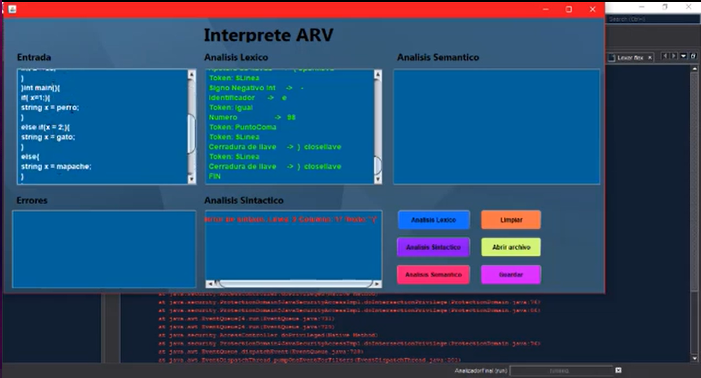

Portafolio
InterpreteEste proyecto tubo como finalidad poner en practica los conocimientos adquiridos del curso de Compiladores el cul tubo como finalidad inculcar las bases de la programacion y los distintos procesos previos que se realizan antes de ejecutar un programa, este fue realizado en lenguaje Java como aplicacion nativa para windows |

|